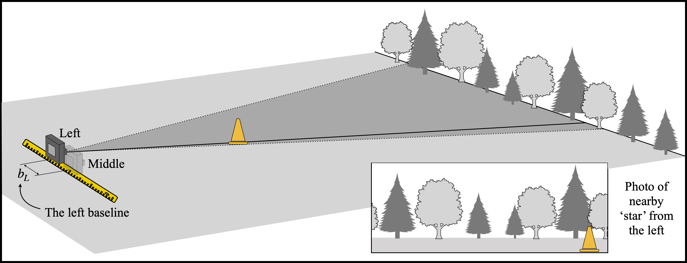

![Diagram showing a camera at Position A photographing distant trees labeled as the background stars. The camera's horizontal field of view is marked with angle theta. Dotted lines extend from the camera to the trees, illustrating the field of view. Several trees are labeled as the distant background stars. An inset at the bottom right shows the camera's photo view with the same trees and the angle theta marked. Text in the image reads: The distant background stars, Horizontal field of view theta, and Photo of background stars from Position A. The environment is an open outdoor field with a calm and instructional tone.](field_Open.jpg)
You should now head out to a large field, with trees in the distance (several hundred feet away). For the purpose of this exercise, those trees will play the role of our background stars. You want them so far away that they barely move when you walk back and forth. Take a photo of those distant trees making sure your camera is set to the same zoom value you used while determining your FOV. Note the location where you took the photo. Call it Position A.
Now your teacher will place a ‘star’ (a cone) a distance d (maybe 50 - 100 feet) in front of you. You will take photos of the cone from three different locations. As you change your position the background trees will appear to move. By carefully measuring “how much” they move we can measure the distance to the cone. Your teacher will use a tape measure to find the actual distance d from Position A to the cone. Once you’ve made your parallax measurements, you can compare your inferred distance to what was directly measured.
Standing at the same spot as the last photo (the Middle), take a photo of the cone with the trees in the background. Record the value of the tape measure at this position.
Enter the value on the tape measure at the Middle:
Move to your right a distance r (no more than 5 meters). Notice how the trees behind the cone appear to have changed. Take another photo. Record the value of the tape measure at this position.
Enter the value on the tape measure at the Right:
Finally, move to the left of the middle to a new location. Take a third photo of the cone. Again, the distant trees behind the cone should appear to have moved. Record the value of the tape measure at this position.

Enter the value on the tape measure at the Left:
The distance moved from side-to-side is called the baseline. Since you took photos from the left and right of position Middle, you have two baselines.
We define the right and left baselines as follows:
bR = Right - Middle, bL = Middle - Left.
Measured values (from above):
Important: Write down your two baseline values (bR and bL) before proceeding to the next step. You will need them for later calculations!